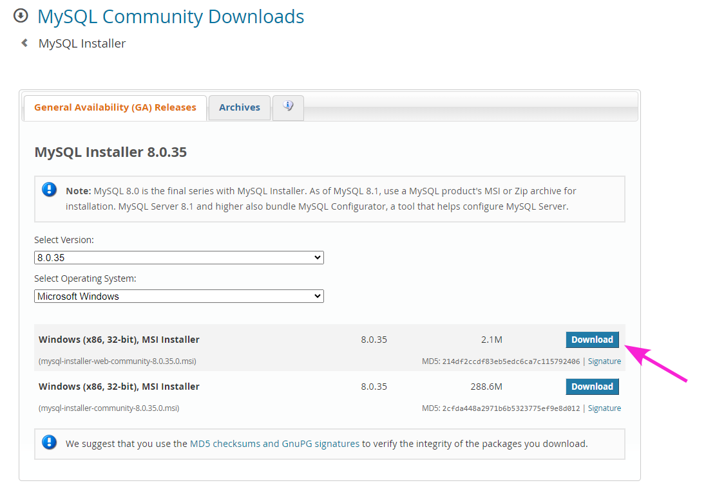
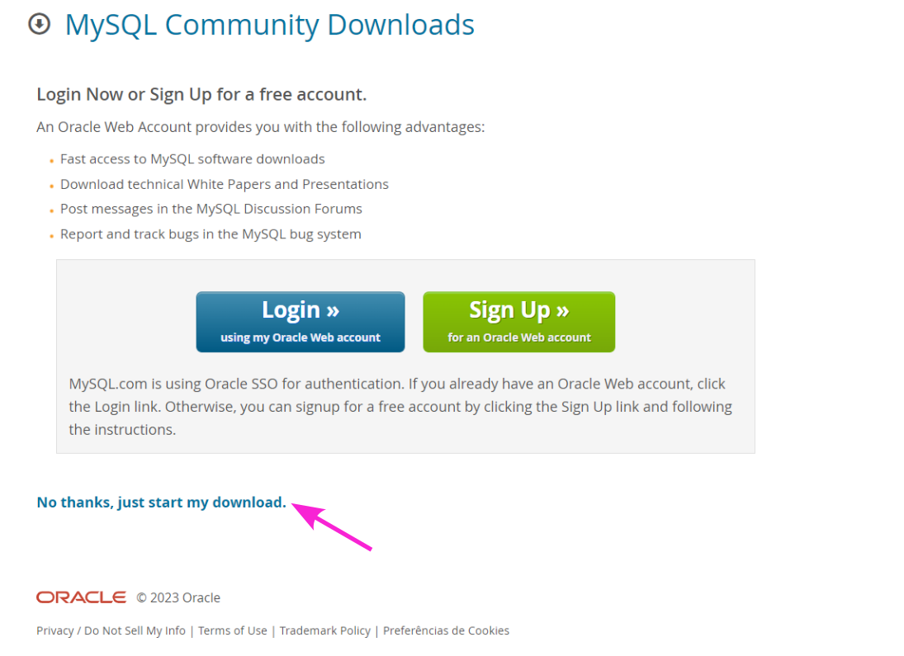
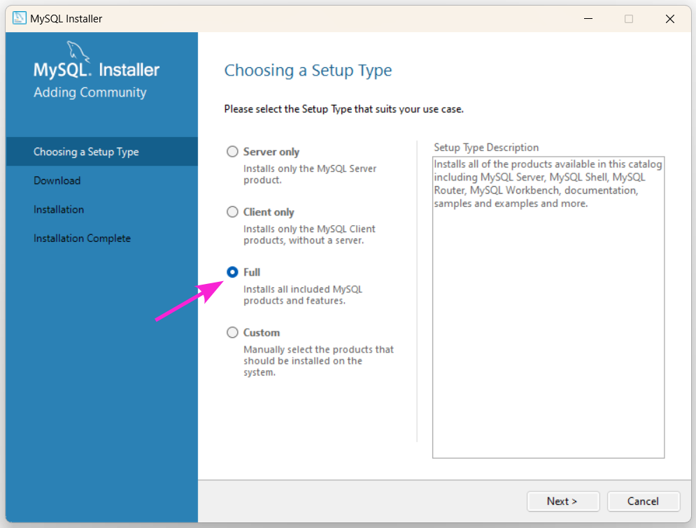
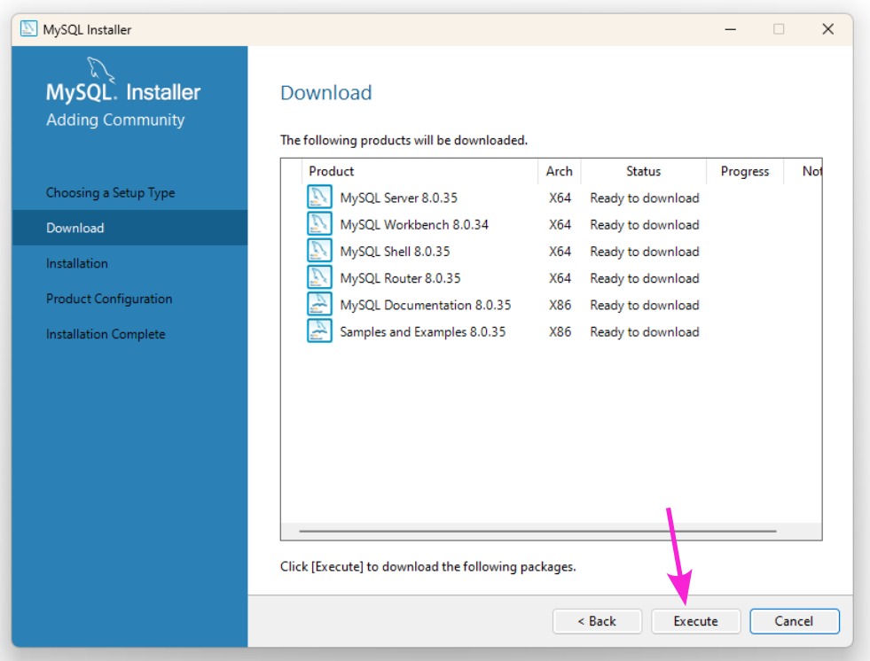
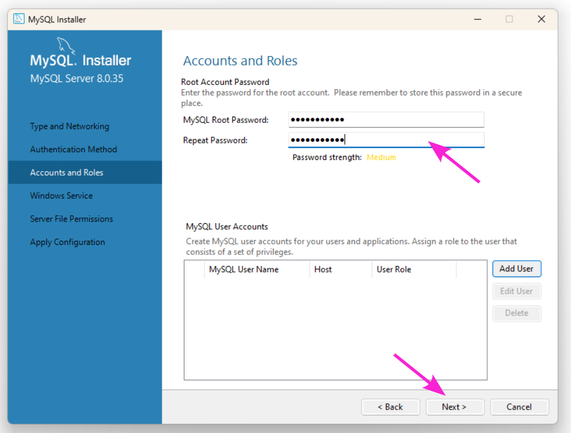
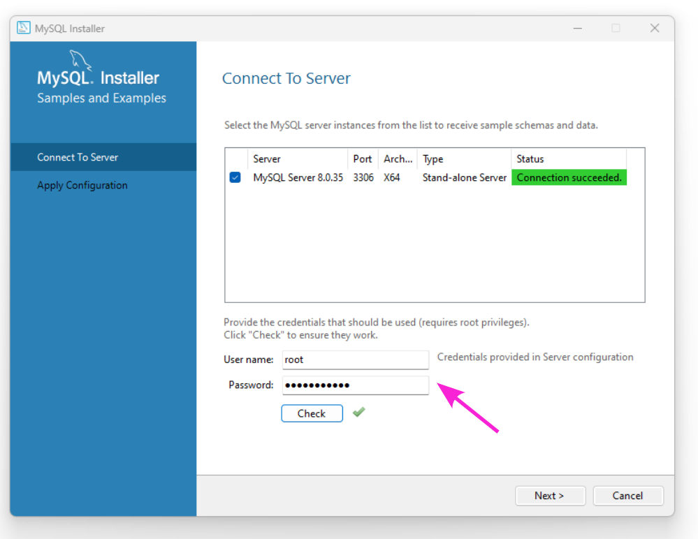
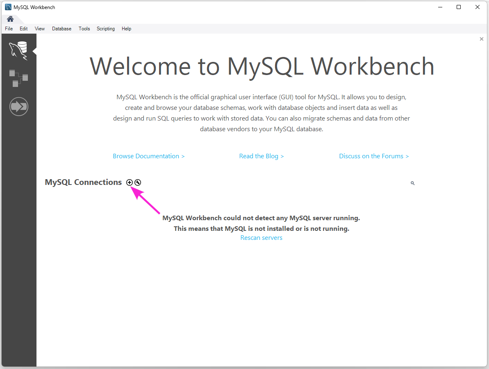
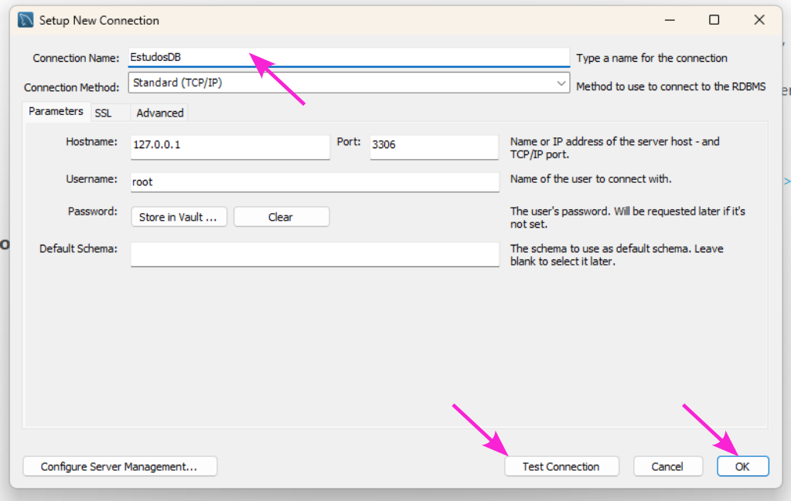
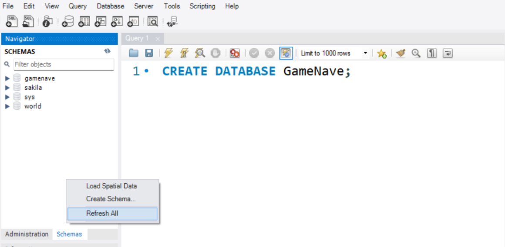

Aplicar técnicas de banco de dados e segurança da informação.
Vamos iniciar os estudos?
PlayAssista ao vídeo abaixo para uma introdução aos seus estudos
Qual a importância dos bancos de dados para os sistemas e os jogos digitais?
Bancos de dados são sistemas essenciais para armazenar, gerenciar e recuperar informações de maneira organizada, desempenhando um papel crucial em diversas áreas da tecnologia e negócios.
Eles são tipicamente estruturados em tabelas contendo linhas e colunas, e podem ser classificados em dois tipos principais: relacionais, que utilizam tabelas para armazenar dados e relações (como MySQL e PostgreSQL), e Não Relacionais ou NoSQL, projetados para dados não estruturados ou semi-estruturados, como os bancos de dados de documentos (MongoDB) e chave-valor (Redis).
Um Sistema de Gerenciamento de Banco de Dados (SGBD) é um software que fornece os meios para armazenar, modificar, extrair e consultar dados em um banco de dados.
Tecnicamente, SGBDs são cruciais para o gerenciamento de dados, oferecendo uma interface entre os dados armazenados e os aplicativos ou usuários que precisam acessar esses dados. Os principais componentes de um SGBD incluem:
Os SGBDs desempenham um papel fundamental em muitos sistemas de TI, oferecendo uma maneira eficiente e segura de gerenciar grandes volumes de dados. Eles suportam a integração com várias aplicações e usuários, possibilitando operações complexas de dados e análises.
Amplamente usado em grandes empresas e organizações, conhecido por sua robustez, segurança e recursos para lidar com grandes volumes de dados.

Um dos sistemas de gerenciamento de banco de dados relacionais mais populares do mundo, conhecido por sua facilidade de uso e eficiência. Amplamente usado na web, é uma escolha comum para sistemas de gestão de conteúdo e aplicações web.
Um SGBD robusto e seguro, popular em ambientes empresariais, oferecendo uma gama de ferramentas para análise de dados, inteligência de negócios e aplicações baseadas em nuvem.

Um sistema de gerenciamento de banco de dados objeto-relacional de código aberto, conhecido por sua conformidade com padrões, extensibilidade e suporte a dados espaciais, sendo uma escolha popular para sistemas que necessitam de um tratamento complexo de dados.
Cada um desses SGBDs têm suas próprias características e pontos fortes, tornando-os adequados para diferentes tipos de aplicações e requisitos de negócios. A escolha de um SGBD geralmente depende das necessidades específicas do projeto, como escalabilidade, segurança, facilidade de uso e custo.
QUESTÃO 1
Qual é a função primária de um Sistema de Gerenciamento de Banco de Dados (SGBD)?
Nesta seção, vamos aprender juntos a instalar o MySQL no computador. Siga os passos a seguir:
Passo 1 - Baixar o instalador do MySQL. Basta entrar no site oficial https://dev.mysql.com/downloads/installer/ e clicar e escolher um dos tipos de Download, caso você deseje baixar todas as dependências ao longo da instalação, siga como na imagem a seguir.
 Passo 2 - Instalação. Vá até o local de salvamento do arquivo e inicie execute o instalador. Antes deve dar permissão para que o MySQL seja instalado no sistema operacional. Das opções que forem apresentadas, escolha a Full, pois vai instalar além do MySQL, o Workbench, para desenvolvermos nossos bancos e consultas.
Passo 3 - Confirmar a execução. O Instalador lista todos os recursos que serão instalados. A partir daqui, basta seguir os passos normais para instalação de qualquer programa, neste momento clique em executar.
Passo 4 - Inserir uma conta. Neste momento, você deve criar uma senha de Root. O usuário Root tem o maior nível de privilégio em um sistema. Certifique-se de colocar uma senha que possa lembrar posteriormente. Também é possível criar contas de usuários adicionais.
Passo 5 - Conecte-se ao server. Após instalado o MySQL server, é preciso fazer a comunicação com o cliente. Aqui, basta inserir a senha de Root criada anteriormente e clicar em Check. Se tudo estiver correto, você pode prosseguir com a configuração.
Passo 6 - Iniciando o MySQL WorkBench. MySQL Workbench é uma ferramenta de design de banco de dados visual que integra desenvolvimento SQL, administração, design de banco de dados, criação e manutenção em um único ambiente de desenvolvimento integrado para o sistema de banco de dados MySQL. Para criar uma nova conexão, basta clicar no ícone +.
Passo 7 - Configurar a nova conexão. Nesta tela, você deve nomear essa nova conexão, aqui colocamos EstudosDB. Também pode testar a conexão, ou simplesmente, clicar em ok para criar a conexão.
Passo 8 - RaioX da tela inicial do Workbench. Na tela inicial do MySQL Workbench, temos algumas abas muito importantes.
Passo 9 - Criar nosso primeiro Banco de dados. Agora podemos criar nosso primeiro banco de dados. O Workbench nos permite criar de forma fácil clicando com o botão direito do mouse na Aba Schemas e escolhendo a opção “Create Schema”. Aqui, vamos usar um comando que será explorado melhor mais a frente nesta aula, o CREATE DATABASE “nome_do_Banco”.
Aqui você deve trocar o conteúdo entre aspas pelo nome do banco que você quer criar.
Para se certificar que o Workbench criou o banco, basta clicar com o botão direito do mouse na aba Schemas e escolher “Refresh All”.
A linguagem de consulta SQL (Structured Query Language) é fundamental para interagir com bancos de dados relacionais, permitindo a criação, manipulação e gestão de dados.
A integridade e a segurança dos dados são aspectos vitais, envolvendo mecanismos para garantir a precisão e consistência dos dados, além de protegê-los contra acessos não autorizados por meio de controle de acesso e criptografia.
Além disso, estratégias de backup e recuperação são fundamentais para proteger dados contra perda ou dano.
Bancos de dados têm uma ampla aplicação prática, sendo utilizados em diversos setores como negócios, finanças, saúde, educação, além de serem cruciais em jogos digitais, e aplicações web e mobile para armazenar dados de usuários e gerenciar interações online.
Este conhecimento é indispensável para profissionais de TI, desenvolvedores de software, e analistas de dados, permitindo o desenvolvimento de soluções eficientes e seguras para o armazenamento e gerenciamento de dados.

Os comandos SQL são categorizados em diferentes tipos, com cada tipo tendo um conjunto de comandos para realizar tarefas específicas. Vamos listar os principais comandos SQL e suas funções:
Cada um desses comandos desempenha um papel crucial no gerenciamento e manipulação de dados em bancos de dados relacionais.
A escolha e utilização adequadas desses comandos dependem das necessidades específicas de cada tarefa ou aplicação.
Nos bancos de dados, cada coluna de uma tabela é designada para armazenar um tipo específico de dado. Os tipos de dados ajudam a definir a natureza dos dados que podem ser armazenados em cada campo e como eles podem ser manipulados. Alguns dos tipos de dados mais comuns incluem:
Cada sistema de gerenciamento de banco de dados pode ter variações e tipos de dados adicionais. A escolha do tipo de dado correto é crucial para a eficiência do banco de dados, otimizando o armazenamento e a velocidade das operações de dados.
A linguagem SQL (Structured Query Language) foi desenvolvida na década de 1970 pelos cientistas da computação Donald D. Chamberlin e Raymond F. Boyce na IBM. Eles estavam trabalhando no projeto System R, um sistema de gerenciamento de banco de dados, e criaram uma linguagem de consulta para esse sistema chamada SEQUEL (Structured English Query Language), que mais tarde foi renomeada para SQL.
QUESTÃO 2
Em um banco de dados SQL, que tipo de dado seria mais apropriado para armazenar um endereço de email?
Todos os exemplos desta aula são feitos utilizando SQL (Structured Query Language).
Certifique-se que está utilizando um SGBD (Sistema de Gerenciamento de Banco de Dados) que trabalhe com essa linguagem. Existem várias ferramentas de bancos de dados disponíveis no mercado.
Entretanto, no vídeo a seguir, para nosso aprendizado, utilizaremos o simulador online de bancos de dados https://sqliteonline.com/.
Agora, para testar os seus conhecimentos, responda à questão a seguir:
QUESTÃO 3
O que significa a sigla SQL em banco de dados?
Relacionamentos em bancos de dados são fundamentais para a organização e estruturação de dados em um sistema de banco de dados relacional.
Esses relacionamentos são usados para associar dados em uma tabela com dados em outra, permitindo que um sistema de banco de dados manipule e recupere informações de maneira eficiente e significativa. Vamos explorar mais a fundo esse conceito.
Os relacionamentos em bancos de dados relacionais são geralmente categorizados em três tipos:
Os relacionamentos são estabelecidos usando chaves estrangeiras, colunas em uma tabela que faz referência às chaves primárias de outras tabelas.
Imagina ter um livro de mil páginas o qual você quer encontrar uma informação muito importante, mas o mesmo não tem um índice?

Da mesma forma que nos livros, índices são estruturas utilizadas para melhorar o desempenho das consultas em um Banco de Dados. Eles permitem a rápida localização de registros com base em determinadas colunas.
Quando um índice é criado em uma coluna, o Banco de Dados mantém uma estrutura organizada para essa coluna, permitindo a recuperação mais eficiente dos dados.
Exemplo de como criar um índice. Suponha que temos uma tabela Clientes com uma coluna “nome” e queremos criar um índice para essa coluna. Basta fazer:
CREATE INDEX idx_nome ON Clientes (nome);
O comando CREATE INDEX usado logo acima cria um índice chamado "idx_nome" na tabela "Clientes" para a coluna "nome".
Isso melhora a velocidade de consultas que envolvam a busca pelo nome dos clientes. Da mesma forma que os índices melhoram a velocidade das buscas, porém sua implantação pode acarretar em maior uso de armazenamento.
Antes de mergulhar em aspectos mais avançados, certifique-se de ter uma compreensão sólida dos conceitos básicos de bancos de dados, como tabelas, registros, campos, chaves primárias e estrangeiras.
Vamos aprimorar o conhecimento? Responda a questão a seguir!
QUESTÃO 4
Verdadeiro ou Falso
Um índice em um banco de dados é uma estrutura de dados que melhora a velocidade das operações, mas pode resultar em maior uso do armazenamento de dados.
Conexões em banco de dados referem-se à comunicação estabelecida entre um aplicativo ou sistema e o banco de dados.
Uma conexão é estabelecida para permitir o acesso, a recuperação e a manipulação dos dados armazenados no banco de dados.

Quando um aplicativo precisa interagir com um banco de dados, ele estabelece uma conexão usando um conjunto de informações de conexão, como o nome do servidor, a porta de comunicação, o nome do banco de dados, o nome de usuário e a senha.
Essas informações são fornecidas para autenticar e autorizar o acesso ao banco de dados.
As conexões em banco de dados são geralmente gerenciadas por um sistema de gerenciamento de banco de dados (SGBD), que controla o número máximo de conexões simultâneas, gerencia os recursos necessários para cada conexão e garante a segurança e a integridade dos dados durante as operações.
Nesta aula aprendemos sobre manipulação de dados, relacionamento entre entidades, tipos de dados utilizados nos Sistemas de gerenciamento de banco de dados atuais.
Também aprendemos sobre índices, utilizando a metáfora de um livro que tem em seu sumário, um bom índice para encontrar informações importantes de forma rápida. E, por fim, aprendemos como se dá a conexão dos bancos de dados com os sistemas que consomem seus recursos.